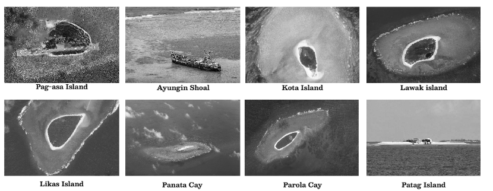

Legal Basis of West Philippine Sea
The Philippines possesses sovereign rights within the West Philippine Sea, the part of the South China Sea within its 200-nautical mile Exclusive Economic Zone (EEZ), according to the 2016 Permanent Court of Arbitration ruling, which clarified that China has no basis for its extensive "nine-dash line" claims in these waters. The Philippines renamed these waters in 2012 to assert its rights under the United Nations Convention on the Law of the Sea (UNCLOS).
What is happening in the West Philippine Sea
The West Philippine Sea (WPS) is part of the Philippines' exclusive economic zone. Philippine sovereignty in the natural resources-rich area is now under threat from China, which continues to ignore the 2016 international arbitral ruling that recognized Philippine ownership of WPS.
Despite the existence of international laws and agreements such as the UN Convention on the Law of the Sea, the Fisheries Code, and the Wildlife Conservation and Protection Act, there remains a deficiency in their effectiveness in safeguarding and enforcing the protection of our oceans and seas.
Why protect the West Philippine Sea?
The West Philippine Sea, abundant in resources and diverse wildlife, serves as an anchor for both the Philippines' economy and the biodiversity of the Southeast Asian region. A significant portion of the Philippines' coral reefs is located in the West Philippine Sea, which plays a vital role in sustaining marine ecosystems. Coral reefs provide a habitat for thousands of species and act as a natural shield, protecting coastlines from the ravages of waves, storms, and floods. It is also known for its abundant oil and natural gas reserves, particularly in the Recto Bank (Reed Bank).
What can we do as a student?
- Joining coastal clean-up drives or mangrove planting activities.
- Practicing eco-friendly habits like reducing single-use plastics, which harm marine life.
- Participating in school research or science projects that focus on marine biology, sustainability, or fisheries.
- Supporting local fishermen by promoting their livelihood and stories through school journalism or online platforms.
- Sharing verified information to counter misinformation about the West Philippine Sea.